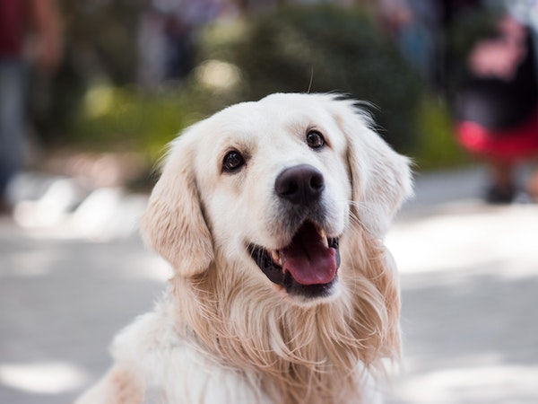
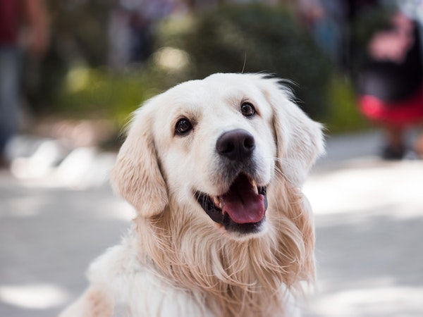
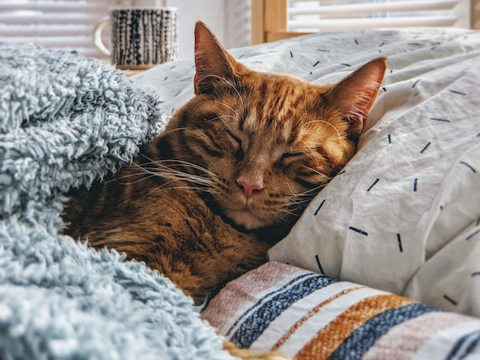
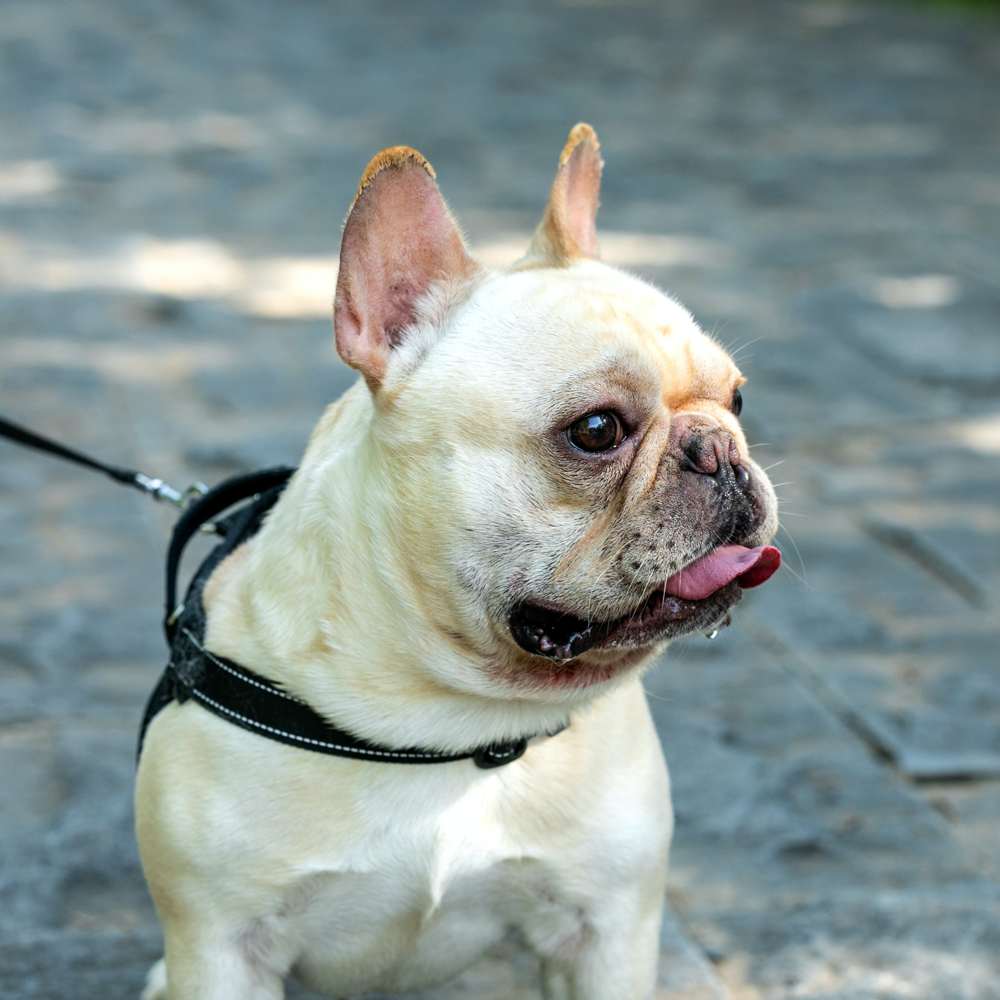
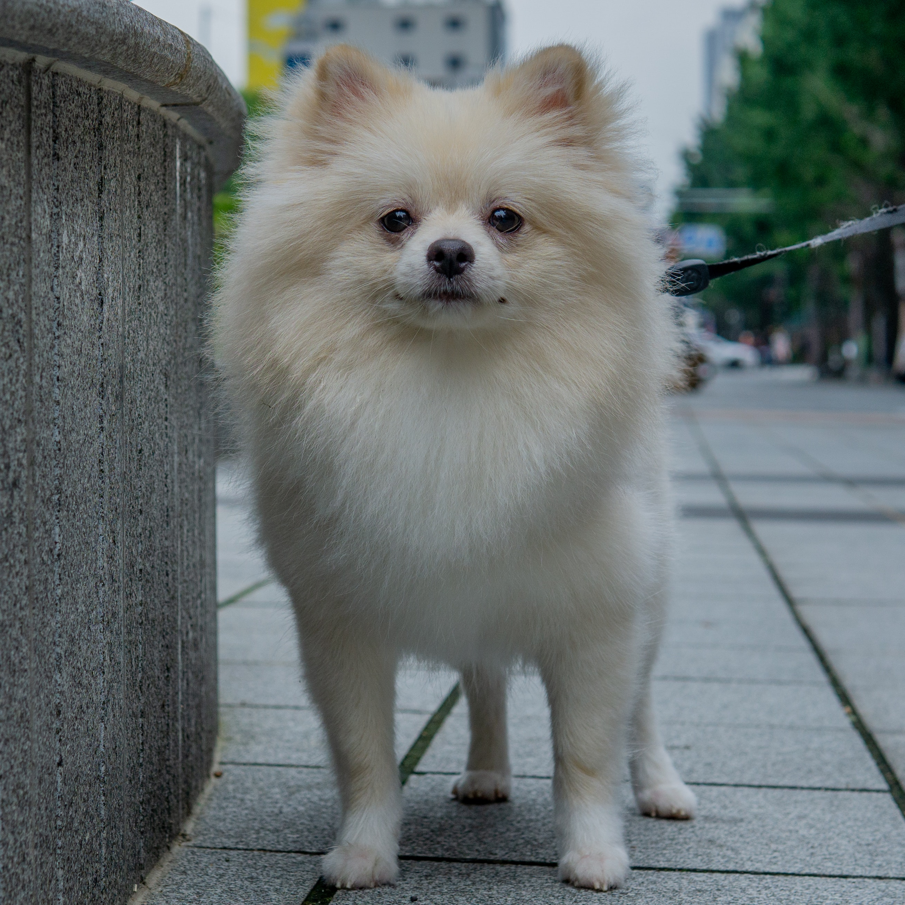

El Racó De l'Adopció
El nostre objectiu és proporcionar el benestar físic i psicològic dels animals del centre.
El nostre objectiu és proporcionar el benestar físic i psicològic dels animals del centre.
Actualment treballem per diferents municipis i entitats privades
La nostra residència canina ofereix un espai segur, tranquil i còmode per la teva mascota
Disposem d'un servei veterinari intern i del material necessari per tenir cura de la salut de tots els animals que acollim
Comptem amb un etòleg per entendre millor els seus problemes de conducta i així millorar la seva qualitat de vida i benestar
24/10/2022
23/06/2022

05/09/2022
1498
204
168